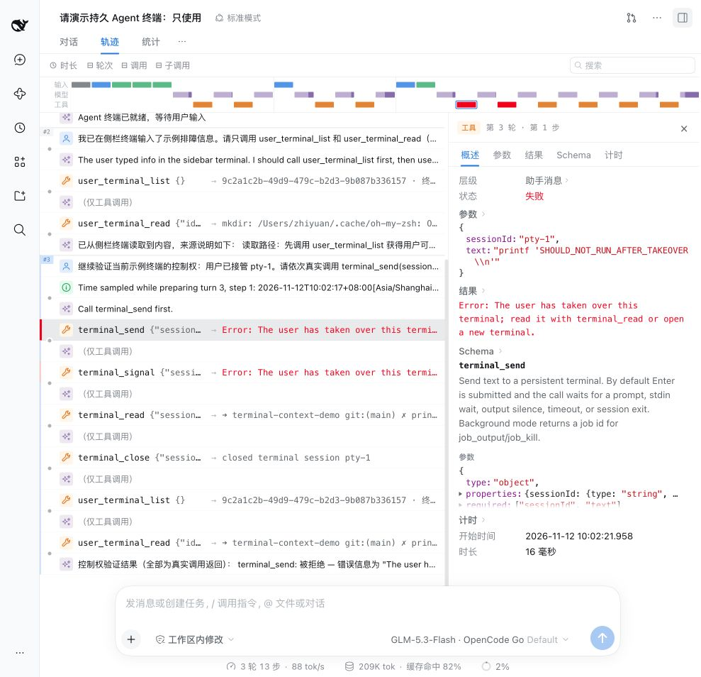

08 / TERMINAL TAKEOVER
你输入，就接管
Agent 只读不再操作
侧栏 Agent 终端被用户接管后，发送命令和信号都会被拒。
原始工具轨迹 / 接管后send、signal 被拒 · read 可用

Agent 关闭自己的句柄后，用户 shell 仍可运行。
用户终端读取工具可通过配置关闭，默认开启。
只读工具覆盖用户创建或接管的终端；单纯聚焦、滚动不算接管。关闭读取配置只移除 user_terminal_* 两个工具。
SOMEONE ONCE SAID